Next: 分散分析（対応なし） Up: JASPについて Previous: 相関係数に関する推測
左上メニューをクリックして [Open]
 [Data Library]
[Data Library]
 [2. T-Tests] と進むと、[Directed Reading Activities] というデータセットが見つかる。
右側のアイコンをダブルクリックして、.csv 形式のファイルを開いてみよう。
[2. T-Tests] と進むと、[Directed Reading Activities] というデータセットが見つかる。
右側のアイコンをダブルクリックして、.csv 形式のファイルを開いてみよう。
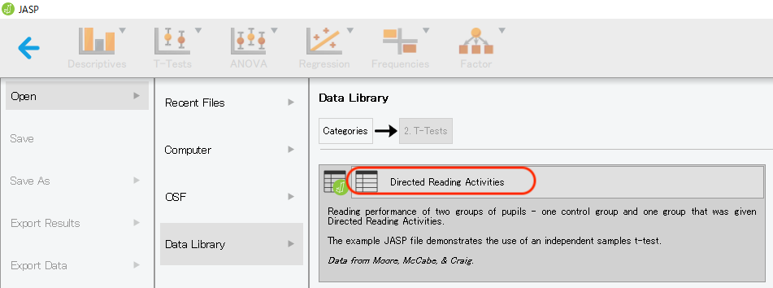
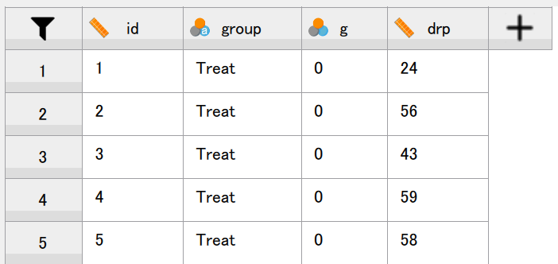
これは、読解指導の効果を検証するために44名の生徒を指導あり/なしの2群に割り当て、読解テストを実施した結果を格納したものである。 変数の概要は以下の通り。
読解テストの得点について、群ごとの記述を行ってみよう。
分析メニューから [Descriptives]
 [Discriptive Statistics] と進み、[Variables] に drp、[Split] に group を移動させると、次のような記述統計量の一覧が表示される。
[Discriptive Statistics] と進み、[Variables] に drp、[Split] に group を移動させると、次のような記述統計量の一覧が表示される。
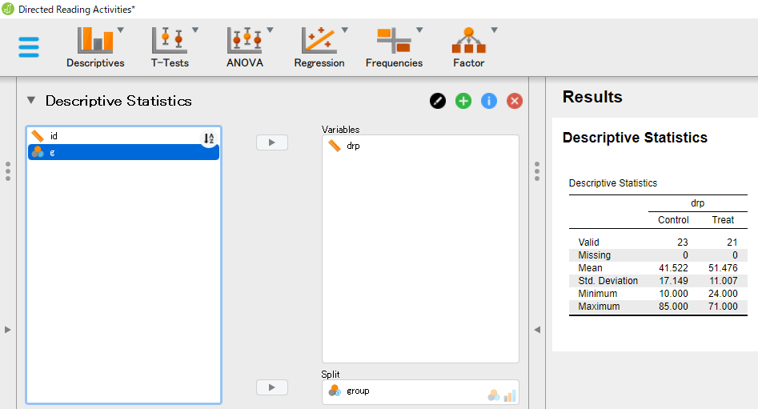
[Plots] を開いて [Boxplots] にチェックを入れると、次のような箱ひげ図が表示される。 分布の特徴を直感的に把握するのに非常に便利である。
実験群の方が全体的に読解テストの得点は高めになっており、また得点のばらつき具合も少ないようである。
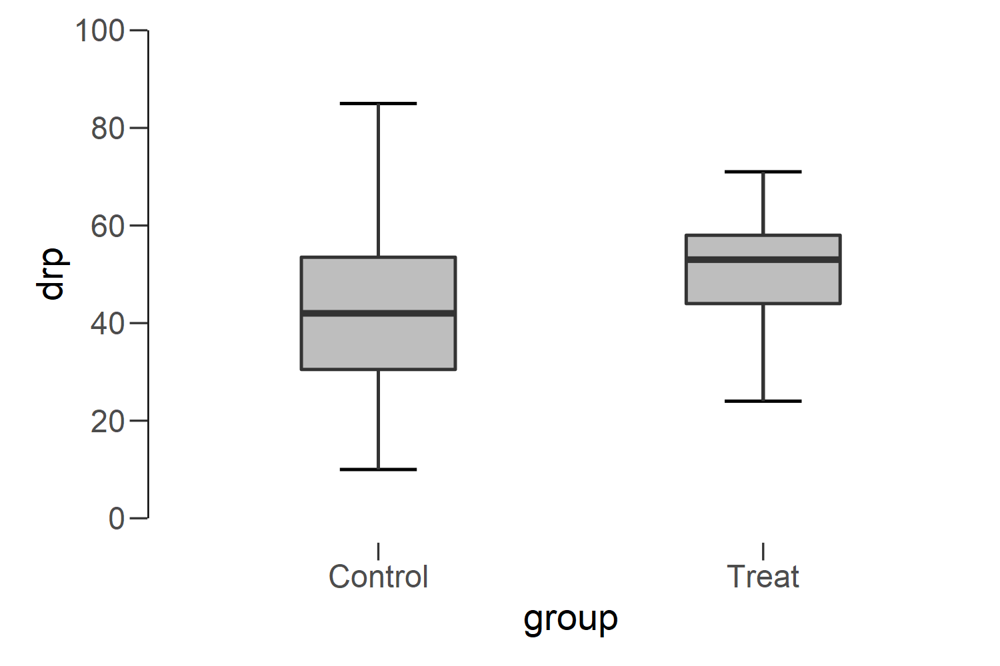
次に、平均の差に関する推測を行うことにしよう。
まず、分析メニューから [T-Tests]
 [Independent Samples T-Test] を選択する。
[Independent Samples T-Test] を選択する。
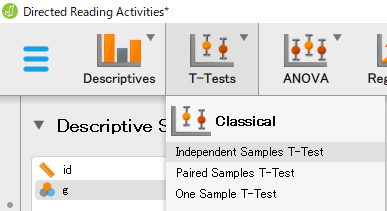
次のような分析画面が表示されるので、従属変数である drp を [Dependent Variables] へ、要因（独立変数）である group を [Grouping Variables] へ移動させてみよう。
この時点で、独立な2群（対応のない2群）の平均の差に関する  検定の結果が表示されるはずだ。
検定の結果が表示されるはずだ。
さらに、効果量とその信頼区間を算出するために、[Additional Statisitics] の [Effect size] と [Confidence interval] にチェックを入れてみよう。 また、すでに確認したことと重複するが、[Descriptives] にチェックを入れると、群ごとの記述統計量も表示される。
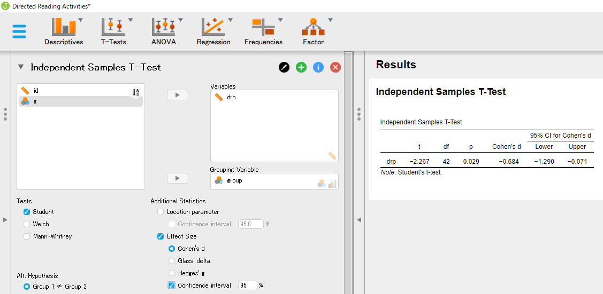
ここで、この分析結果では  値がマイナスになっていることに注意しよう。
これは、
値がマイナスになっていることに注意しよう。
これは、 を計算する際に統制群の平均から実験群の平均を引いた差を考えているためである。
JASP では、平均の差を取る際に水準の値の小さい方から大きい方を引く（アルファベットの場合は、若い方から後の方を引く）ようになっている。
このデータでは、変数 group で、実験群が Treat、統制群が Control と入力されていたので、「実験群が統制群よりも平均が高い」ではなく、「統制群が実験群よりも平均が低い」という観点で結果が出力されたことになる。
今の例では、「読解指導によって読解テストの得点が上がる」と主張するのが自然であるから、結果を報告する際には正負を入れ替えた方が混乱を招かなくてよいだろう7。
つまり、検定に関しては
を計算する際に統制群の平均から実験群の平均を引いた差を考えているためである。
JASP では、平均の差を取る際に水準の値の小さい方から大きい方を引く（アルファベットの場合は、若い方から後の方を引く）ようになっている。
このデータでは、変数 group で、実験群が Treat、統制群が Control と入力されていたので、「実験群が統制群よりも平均が高い」ではなく、「統制群が実験群よりも平均が低い」という観点で結果が出力されたことになる。
今の例では、「読解指導によって読解テストの得点が上がる」と主張するのが自然であるから、結果を報告する際には正負を入れ替えた方が混乱を招かなくてよいだろう7。
つまり、検定に関しては
読解テストの得点は、読解指導あり群の平均がなし群の平均を統計的に有意に上回っていた（ 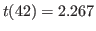, 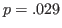）。のように述べるということである。
同様に、標準化された平均の差が [Cohen's d] として、またその信頼区間が [95% CI for Cohen's d] として報告されているが、上記のようにするならばそれに合わせてこちらの符号も入れ替えてやる必要がある。 つまり、検定結果と合わせて効果量とその推定結果も記述するならば、上記のカッコ内は、
, , Cohen's 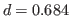, 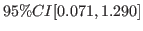のようになるであろう8。
読解指導の効果は統計的に有意であり、得られたデータにおいては中程度の効果量であったものの、母集団においては小さく見積もって無視できるレベル、大きく見積もって相当大きな向上をもたらすといえるレベルということになり、かなり曖昧な主張しかできない。 さらに標本サイズを大きくして信頼区間の幅を狭める努力が必要だろう。
同じく Data Library から、[2. T-Test] と進むと、[Weight Gain] というデータが見つかるはずである。 これは、16人の被験者について、8週間にわたるカロリーの過剰摂取の前後で体重を測定したデータである9。
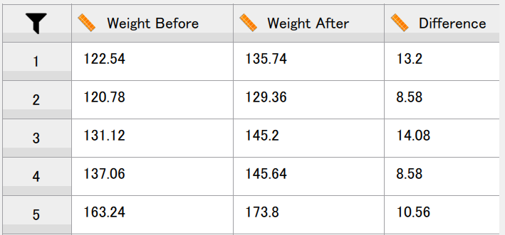
変数の概要は以下の通り。
分析メニューから [Descriptives]
 [Discriptive Statistics] と進むと、各変数の記述統計量を確認できる。
カロリー摂取前から摂取後にかけて、当然ではあるが平均体重が増加していることがわかる。
このことは、体重の変化量 Difference の平均からも明らかである。
[Discriptive Statistics] と進むと、各変数の記述統計量を確認できる。
カロリー摂取前から摂取後にかけて、当然ではあるが平均体重が増加していることがわかる。
このことは、体重の変化量 Difference の平均からも明らかである。
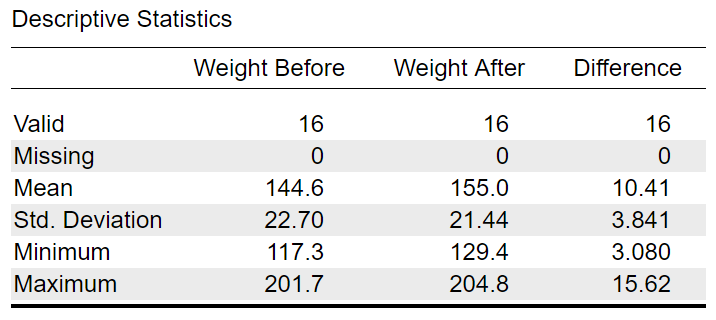
ちなみに、このデータファイルでは、事前と事後の得点が異なる列として横に並べられている。 このような整理の仕方をワイドフォーマット（wide format）という。 差得点を算出するのであれば、このような整理の仕方は確かに便利である。
一方、被験者のIDと事前/事後を表す変数を用意した上で、同じ従属変数の値は1列につなげて整理するという方法もある。 表 6.1 は、被験者を id、事前/事後を treat（pre = 事前、post = 事後）、体重を weight として整理し直したものである。 このような形式をロングフォーマット（long format）という。 差得点を算出するのには向いていないかもしれないが、分析によってはこちらの方法で整理されている方がやりやすい場合もある。
| id | treat | weight |
| 1 | pre | 122.54 |
| 1 | post | 135.74 |
| 2 | pre | 120.78 |
| 2 | post | 129.36 |
| 16 | post | 132.66 |
対応のある2群の平均を比較する方法は、大きく分けて2通りある。 1つは「平均の差」について検証するもの、もう1つは「差得点の平均」について検証するものである。 対応のあるデザインの場合、平均の差と差得点の平均は等しいということから想像できるように、どちらの方法を用いても検定や推定の結果は同じになる。
まずは、対応のある2群についてそれぞれ定義される平均の間に差があるか検証する方法を実行してみよう。
分析メニューから [T-Tests]
 [Paired Samples T-Test] を選択する。
[Paired Samples T-Test] を選択する。
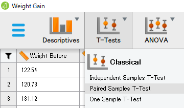
すると、次のようなメニューが開くので、左のボックスにある変数から「引かれるもの」「引くもの」の順で右のボックスに移動させる。 この例では、Weight After を先に、Weight Before を移せばよい。
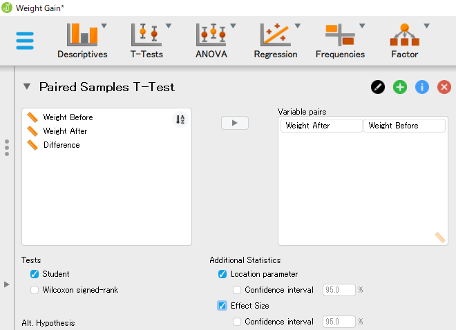
すると、2群の平均の差に関する検定の結果が表示される。 さらに、[Additional Statistics] の [Location parameter] と [Confidence interval] にチェックを入れると、標準化されていない平均の差に関する推定結果が、[Effect size] と [Confidence interval] にチェックを入れると、標準化された平均の差に関する推定結果が検定結果の右側に追加される。
また、[Descriptives] にチェックを入れれば、事前と事後それぞれのデータについて記述統計量が算出される。
検定結果からは、カロリー摂取によって体重が有意に増加する（ 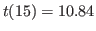, 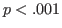）ことがわかる。 さらに、体重の場合は明確な単位（この場合はポンド）が存在するので、標準化されていない平均の差を報告した方がイメージがつかみやすいかもしれない。 ちなみに、ここで Cohen's d と表示されているものは、対応のない2群で用いられたものと異なる定義で計算されたもの10であるため、結果の評価には注意が必要である。
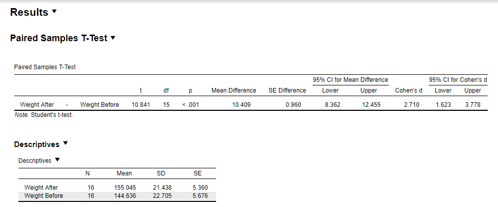
このデータには Difference として体重の変化量（差得点）がすでに与えられている。 差得点の平均は平均の差に等しく、また対応がある場合の平均の差について検定するための検定統計量は差得点の情報さえあれば計算できるから、この変化量のデータだけを用いて上記と同じ分析を行うことができる。
分析メニューから [T-Tests]
 [One Sample T-Test] を選択する。
[One Sample T-Test] を選択する。
すると、次のようなメニューが開くので、差得点である Difference を左のボックスから右のボックスへと移動させる。 また、先ほどと同じように推定と記述の結果も出力させておこう。
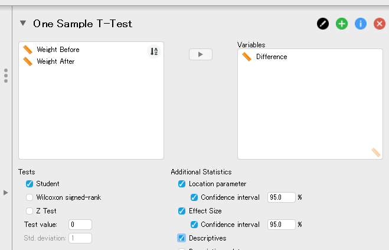
結果は次の通りである。 ここでは、「差得点の母集団平均はゼロである」という帰無仮説を検定しているのだが、「母集団平均の差はゼロである」という帰無仮説の検定結果と同じになっていること、また差得点の母集団平均に関する推定の結果も、母集団平均の差に関する推定の結果と同じであることを確認しておこう。
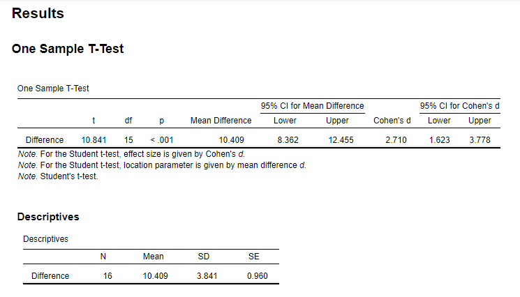
検定や推定の結果は同じになるので、どちらの方法を採用すべきか迷うところではある。 データの記述という観点からは事前と事後の平均やSDもわかっていた方が何かと都合がよいので、その部分は2群のデータを用いればよいだろう。 一方、推測になると2群のデータを用いた場合は特に標準化された平均の差が同じ Cohen's d と表記されていながら実は異なる定義にもとづく指標であるということに気づきにくい。 あくまで差得点から算出された指標だということを忘れないためにも、後者の方法を取った方がよいかもしれない。
Taichi Okumura